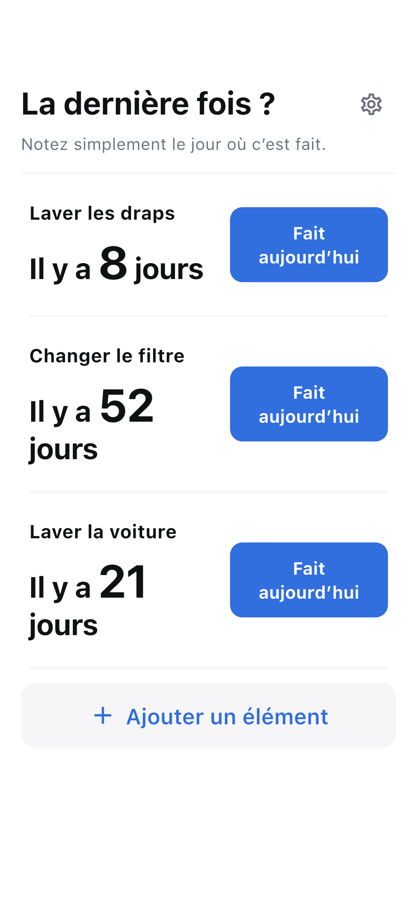

Donnez un nom
Ajoutez le nettoyage, remplacement ou entretien à retenir. Un nom suffit.
La dernière fois ? · iOS / Android
Notez nettoyages, remplacements et entretien. Voyez le temps écoulé.
Voir le fonctionnementPublication en préparation

MODE D’EMPLOI
Ajoutez le nettoyage, remplacement ou entretien à retenir. Un nom suffit.
Fait aujourd’hui enregistre immédiatement. Annulez une erreur aussitôt.
Consultez les jours écoulés, puis touchez un élément pour son historique et sa moyenne.
L’ESSENTIEL
Sans rappels ni cycles recommandés. Les moyennes reflètent vos propres données.
Éléments et historique restent sur l’appareil. L’enregistrement fonctionne hors connexion. La publicité utilise internet.
Les sauvegardes du système peuvent inclure les données, sans garantie de récupération.
Lire la politique de confidentialité →